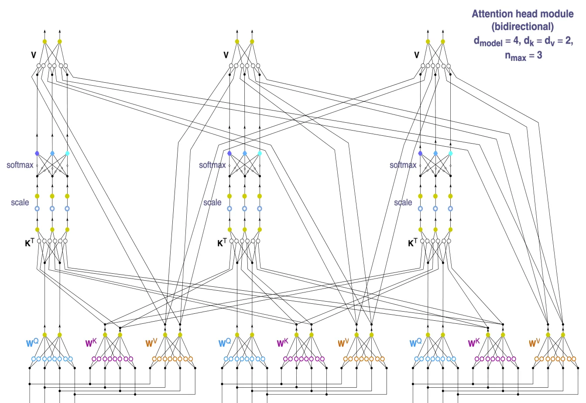
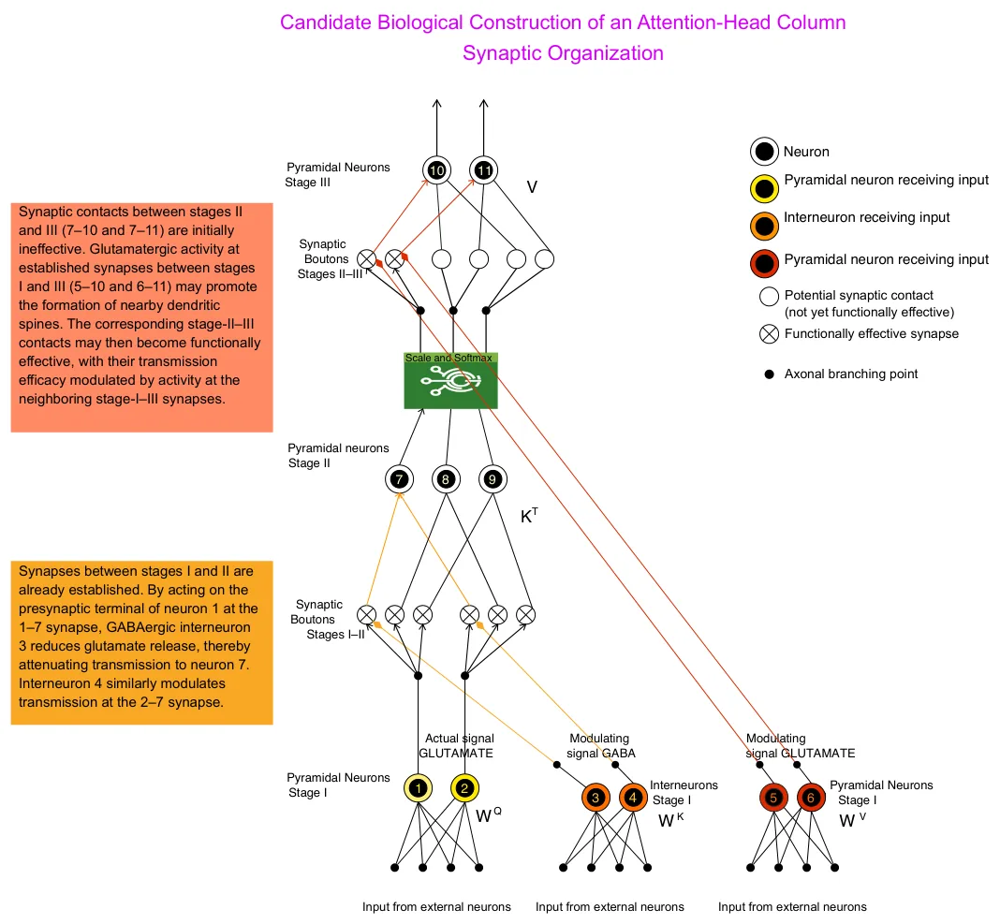

O Desafio da Realização Biológica
A ascensão dos Transformers revolucionou o processamento de linguagem natural, mas sua implementação em hardware biológico permanece um mistério. A questão central não é se o cérebro humano 'pensa' como um Transformer, mas se os princípios funcionais observados em suas cabeças de atenção (attention heads) podem ser encontrados em construções físicas alternativas. Este paper, de autoria de Fabrizia Giulia Garavaglia e Marco Giunti, aborda essa pergunta sob uma ótica neuromórfica e mecânica-estrutural.
A abordagem tradicional tende a buscar correspondências diretas entre as operações matriciais dos modelos artificiais e a atividade neuronal. No entanto, os autores argumentam que isso é desnecessário e possivelmente enganoso. Em vez disso, eles propõem tratar a cabeça de atenção como um tipo de sistema abstrato, definido por sua organização funcional, independente de qualquer instância matemática específica. O foco é a arquitetura: como os componentes se conectam e como a informação flui e é transformada.
A motivação para esta investigação surge de uma característica fundamental do processamento em Transformers durante a inferência. Diferentemente do treinamento, onde os parâmetros são fixos, a inferência gera estruturas de parâmetros dependentes da entrada. Essas estruturas definem transformações dinâmicas das representações dos tokens. A hipótese é que o tecido neural cortical possa construir organizações funcionais equivalentes através de mecanismos locais de modulação de sinal, onde a atividade neural modifica a transmissão de outros sinais.

Descrição Mecânica-Structural da Atenção
Para estabelecer uma ponte com a biologia, os autores primeiro redescrevem as cabeças de atenção dos Transformers em termos de uma descrição mecânica-estrutural. Nesta visão, uma cabeça de atenção não é apenas uma multiplicação de matrizes, mas um sistema de redes neurais simples organizadas através de interconexões específicas. Existem dois tipos principais de conexões: output-input e output-weight.
As interconexões output-input são mais diretas, onde a saída de um componente alimenta a entrada de outro. O ponto crucial, porém, são as interconexões output-weight. Neste mecanismo, a saída gerada durante a inferência determina os pesos, e consequentemente as transformações, de outros componentes da rede. Isso cria um sistema onde a transformação dos dados é dinâmica e depende do próprio processamento em curso. É essa dinâmica de pesos variáveis que os autores buscam replicar biologicamente.
Ao decompor a cabeça de atenção desta forma, o problema da realização biológica se torna mais manejável. Não precisamos explicar como o cérebro realiza multiplicação de matrizes de alta dimensionalidade em tempo real. Em vez disso, perguntamos: quais mecanismos neurais podem criar uma organização funcional onde a atividade de um grupo de neurônios modula a sensibilidade ou o peso de transmissão de outro grupo, de forma dependente da entrada?
A Hipótese das Colunas Piramidais
Com a estrutura funcional definida, o paper propõe um candidato biológico específico: um grupo organizado de colunas piramidais nas regiões temporais posteriores da linguagem (PTLRs, do inglês Posterior Temporal Language Regions). Estas áreas, tradicionalmente associadas à área de Wernicke, são cruciais para o processamento da linguagem humana e oferecem uma arquitetura cortical rica para análise.
A hipótese é que circuitos dentro dessas colunas piramidais possam constituir uma realização neuromórfica mecânica de uma cabeça de atenção. A chave aqui é que a realização neuromórfica preserva a organização funcional abstrata, mas a materializa usando componentes e interconexões semelhantes a neurônios. Isso permite que a 'cabeça de atenção' biológica opere sob uma instantiação matemática diferente da do Transformer padrão, enquanto mantém a mesma lógica de processamento de informação.
Os autores não afirmam que o cérebro usa Transformers. Eles afirmam que o cérebro pode ter evoluído ou desenvolvido circuitos que realizam a mesma função computacional abstrata, mas através de meios físicos distintos. Isso abre espaço para mecanismos de modulação sináptica e integração de sinais que não têm equivalente direto nas operações lineares convencionais, mas que efetivamente realizam o mapeamento e a ponderação de informações relevantes.

Mapeando Componentes para a Biologia
O cerne do paper reside no mapeamento detalhado entre os componentes abstratos do modelo mecânico e os elementos neurofisiológicos candidatos. Os autores identificam mecanismos específicos de transmissão e modulação de sinal dentro e entre as colunas piramidais que podem sustentar essa construção. O foco recai sobre dois mecanismos principais: modulação axo-axônica GABAérgica e interações glutamatérgicas locais.
Na analogia proposta, os grupos de neurônios de primeira etapa nas colunas piramidais assumem papéis associados ao processamento de Query, Key e Value, elementos fundamentais do mecanismo de atenção. No entanto, a inovação não está apenas em identificar esses grupos, mas em explicar como as interconexões output-weight são realizadas biologicamente. A modulação GABAérgica, realizada por interneurônios, atua sobre sinapses estabelecidas, ajustando sua eficácia.
Simultaneamente, interações locais entre sinapses axo-dendríticas vizinhas, mediadas pelo glutamato, permitem que a atividade em uma região influencie a integração de sinais em outra. Esses mecanismos oferecem um substrato físico para a ideia de que a saída de um processamento determina a transformação da entrada em outro. A atividade neural local não é apenas um sinal passivo; ela modifica ativamente o circuito, alterando como os sinais futuros serão transmitidos ou integrados, criando assim a dependência de peso dinâmica necessária.
A Dinâmica dos Pesos Sinais
A distinção entre treinamento e inferência no Transformer é crítica para entender por que a modulação biológica é um análogo plausível. No treinamento, os pesos são aprendidos e depois fixados. Na inferência, o modelo cria transformações dinâmicas baseadas no contexto atual. Biologicamente, isso se traduz na capacidade do tecido neural de ajustar sua conectividade funcional em tempo real, sem mudanças estruturais permanentes no curto prazo.
Os mecanismos propostos, como a formação e ativação funcional de contatos sinápticos dependentes de glutamato, operam em escalas de tempo que podem ser compatíveis com o processamento da linguagem. A modulação GABAérgica oferece um meio rápido de inibir ou facilitar a transmissão sináptica, permitindo que o circuito 'decida' quais sinais são relevantes no momento presente. Isso espelha a função de atenção, que pondera a importância de diferentes partes da entrada.
É importante notar que esta realização neuromórfica não requer que o cérebro calcule softmaxes ou normalizações de escala da mesma forma que o modelo artificial. O que importa é que a organização funcional resultante permita que o sistema foque em informações relevantes e ignore ruído, através de interações locais e dependentes de contexto. A matemática subjacente pode ser radicalmente diferente, mas a arquitetura de informação permanece isomórfica.
Implicações para Hardware e Neurociência
Além das implicações teóricas para a neurociência computacional, esta abordagem oferece caminhos para o desenvolvimento de hardware neuromórfico. Ao entender a atenção como uma arquitetura funcional realizável por mecanismos de modulação local, engenheiros podem projetar chips que imitam esses princípios de eficiência, em vez de tentar emular diretamente as operações matriciais dos Transformers.
Estudos recentes, como os de Leroux, Finkbeiner e Neftci (2025), já exploram princípios neuromórficos para realizar processamento similar ao de Transformers, focando em eficiência computacional. Este paper contribui para essa linha ao fornecer um modelo biológico específico que pode inspirar novas arquiteturas de hardware. A ideia é que a natureza já resolveu problemas de processamento de informação dinâmica de formas que podem ser mais eficientes que as implementações digitais atuais.
Para a neurociência, a proposta levanta questões fascinantes sobre a função da área de Wernicke e regiões temporais posteriores. Se a hipótese for confirmada, isso sugeriria que a linguagem humana depende de circuitos que realizam computação de atenção de forma nativa, usando modulação sináptica local para integrar informações contextuais complexas. Isso poderia levar a novas compreensões sobre déficits de linguagem e como eles afetam a capacidade de processar contexto.
Conclusão e Direções Futuras
O paper conclui que é plausível, do ponto de vista mecânico-estrutural, que colunas piramidais nas PTLRs constituam uma realização neuromórfica de cabeças de atenção. A chave foi identificar mecanismos de modulação axo-axônica GABAérgica e interações glutamatérgicas locais como os responsáveis pelas interconexões output-weight.
Pesquisas futuras devem investigar se essa organização neural existe de fato nas PTLRs e se os mecanismos propostos operam na escala de tempo adequada. Também é necessário explorar como operações de rescalamento e o bloco de função Softmax podem ser construídos biologicamente, bem como como a sinalização modulatória é coordenada entre colunas piramidais.
Em última análise, este trabalho não tenta provar que o cérebro é um Transformer. Ele mostra que a arquitetura funcional de um dos seus componentes-chave pode ser realizada biologicamente através de mecanismos distintos. Essa distinção entre função e implementação é fundamental para avançar tanto na compreensão da inteligência artificial quanto na neurociência cognitiva.
O que fica
- Transformers podem ser vistos como sistemas de redes neurais simples interconectadas, onde saídas determinam pesos dinâmicos.
- A hipótese propõe que colunas piramidais no córtex temporal posterior realizam funções análogas a Query, Key e Value.
- Mecanismos GABAérgicos e glutamatérgicos locais podem simular as interconexões de peso-saída do modelo artificial.
- A realização biológica não precisa replicar as matrizes exatas do Transformer, apenas a organização funcional.
Paper original: Pyramidal Columns Acting as Attention Heads
Comentários
Nenhum comentário ainda. Seja o primeiro.